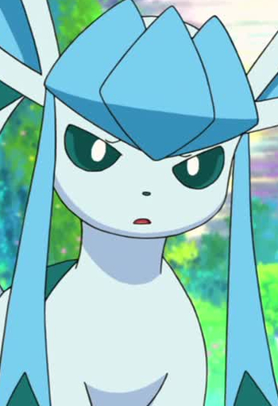
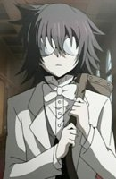
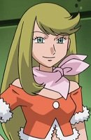
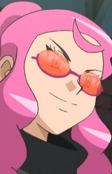
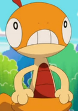

|
Elizabeth Thompson |
- Soul Eater
- Soul Eater NOT!
|
Elizabeth Thompson is part of Death the Kid's Double Team Demon Guns. She is the oldest out of the Thompson Twins and the most matures out of the two girls. She is more of a teenage girl. Elizabeth can transform into a gun, so can her sister, and can be use by kid or her sister. |
|  |
Glaceon |
- Pokemon: Eevees and Friends
|
Glaceon is a Pokemon from the Sinnoh region. Glaceon is one of the final forms of Eevee. This Pokemon is able to create small ice crystals around it by controlling its body temperature. |
 |
Halle Lidner |
- Death Note
- Death Note Rewrite
|
Halle Linder or Halle Bullook works for Near's investigation team. It has been mentioned that she was a former CIA agent. |
|  |
Leo |
|
Leo is a boy with dark messy hair and round glasses. He is a student at Ludwidge Academy and serves Elliot. He has a calm and collected demeanor. Leo is very observant. |
| |
Leona |
- Pokemon: Diamond and Pearl
|
Leona is a childhood friend of Dawn and Kenny. She lives near a hot spring with her parents. |
|  |
Linda |
|
Linda is a friend of Charles. She does not approve of his alter-ego, The Might Accelguard. She enjoys teasing him about how clumsy he is. |
|  |
Malva |
- Pokemon XY
- Pokemon XY: Mega Evolution
- Pokemon XY and Z
|
Malva is an elite four member of the Kalos elite four and a former Team Flare member. |
 |
Natalia Kaminski |
|
Natalia Kaminski is a freelance mercenary who sold information to Noritaka's research on vampires. She rescues Kiritsugu when he was young and took him as her apprentice. |
|  |
Scraggy |
|
Scraggy is a Pokemon from the Unova region. Scraggy is the pre-form of Scrafty. This pokemon is easily engaged in battle, as it will attack any foe that so much as meets its gaze with its cranium. Ash's pokemon hatched a Scraggy and as the series processes Scraagy learn new moves. Scraggy had a friendship with Iris' Axew |
 |
Subaru Mimasaka |
- Food Wars! The Second Plate
|
Subaru Mimasaka is 92nd Tootsuki Generation student at Tootsuki Culinary Academy. He come off as a big, punkish dude but he is honorable and friendly man. Behind all that, he is sadistic and cruel. Akeno Watanabe voiced the younger Subaru Mimasaka. |